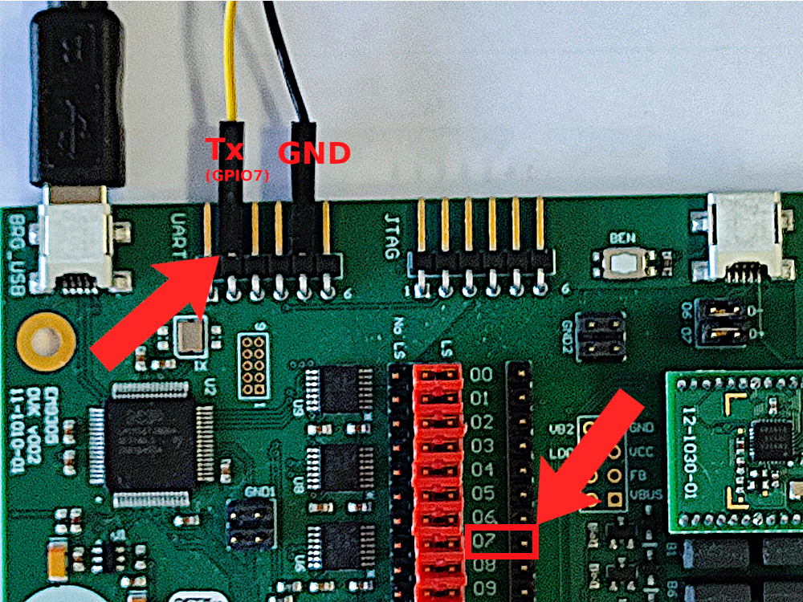
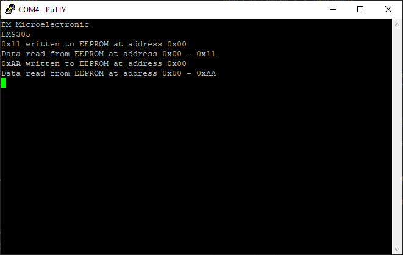

I2C with EEPROM Example
Overview
The purpose of this example is to show how to use the I2C Master driver library with QPC to read and write on a EEPROM.
Setup
The output (Tx UART signal) is on GPIO7. This signal can be accessed from two header connectors (see picture below).
{kind=link}
You can then connect a USB to UART device to GPIO7 and use a terminal software (for example docklight, PuTTy, …) to connect to the COM port of your device.
Warning
Double check you connected the jumpers D+(07) and D-(06) on the DVK. The GPIO6 and GPIO7 pins are connected by default to the USB connector.
This example read and write an EEPROM (AT24C08) using the I2C bus.
Connections of the EEPROM
I2C SCK GPIO 10
I2C SDA GPIO 11
VCC for EEPROM on Pin 6 of UART connector (3.3 V)
Warning
Remove the jumpers for the level shifter for I2C bus (GPIO 10 & 11) on the DVK.
After flashing the code example, it will send some messages on UART.
{kind=link}
Implementation details
This example code uses the implementation of the printf example, please check documentation of this example for UART implementation details.
I2C module shall be registered in NVM_ConfigModules() function.
Then I2C config structure shall be also configured just after module is registered.
I2C_RegisterModule();
gI2C_Config.clockFrequency = ClockFrequency100;
gI2C_Config.clockStretching = true;
gI2C_Config.gpioSck = GPIO_I2C_SCK;
gI2C_Config.gpioSda = GPIO_I2C_SDA;
gI2C_Config.enabled = true;
In NVM_ConfigModules() the GPIO shall be configured at system startup (if (!PML_DidBootFromSleep()))).
// Enable inputs for SDA and SCL
gGPIO_Config.hardwareState.RegGPIOInputEn.r32 =
(uint32_t)(GPIO_MASK_I2CM_SCK | GPIO_MASK_I2CM_SDA);
// Enable outputs for UART TX, SDA, and SCL
gGPIO_Config.hardwareState.RegGPIOOutputEn.r32 =
(uint32_t)(GPIO_MASK_PIN_7 | GPIO_MASK_I2CM_SCK | GPIO_MASK_I2CM_SDA);
// Disable pull-downs on all pins
gGPIO_Config.hardwareState.RegGPIOPdEn.r32 = (uint32_t)0x0000;
// Enable pull-up on UART TX and I2C SCL and SDA
gGPIO_Config.hardwareState.RegGPIOPuEn.r32 = (uint32_t)(GPIO_MASK_PIN_7);
// Set GPIO0 function to I2C Slave SCL/SCK
gGPIO_Config.hardwareState.RegGPIOOutSel2.regs.GPIOOutSel10 =
(uint8_t)GPIO_PIN_FUNC_OUT_I2C_SCK;
// Set GPIO1 function to I2C Slave SDA
gGPIO_Config.hardwareState.RegGPIOOutSel2.regs.GPIOOutSel11 =
(uint8_t)GPIO_PIN_FUNC_OUT_I2C_SDA;
// Set the UART TX output function on GPIO7
gGPIO_Config.hardwareState.RegGPIOOutSel1.regs.GPIOOutSel7 =
(uint8_t)GPIO_PIN_FUNC_OUT_UART_TXD;
// Disable the UART RX input function
gGPIO_Config.hardwareState.RegGPIOInpSel1.regs.GPIOInSelUARTRDX =
(uint8_t)GPIO_FUNCTION_NOT_MAPPED;
When working with I2C Master bus driver, a callback can be defined for asynchronous operation. This callback is called when I2C operation is finished and post an event to the task.
static void I2C_Callback(Driver_Status_t status, void* pUserData)
{
QK_ISR_ENTRY();
// Post an event to the task.
QEventParams* pEvent = (QEventParams*)Q_NEW(QEventParams, SIG_I2C);
QACTIVE_POST(&AO_Task.super, (QEvt*)pEvent, NULL);
QK_ISR_EXIT();
}
When the application starts, the application send the EM message on the UART and write one byte in the EEPROM by calling I2C_WriteRegister() function.
When the I2C operation finishes, the event is sent by the I2C callback. Then, the application receives this event and continue the I2C operation using a state for each step.
The application starts to write one byte and then reads it back. It repeat this 2 times using different values to check that the read/write operations work with the EEPROM.
Build
The build target of this example is: i2c_example
cd <sdk>\build
cmake --build . --target i2c_example
Run
To program and run the example:
cd <sdk>\tools\blengine
python blengine_cli.py --port=COMYY run emsystem_prog ..\..\build\projects\i2c_example\i2c_example.ihex --progress
With YY = the COM port number used to program your DVK (the one connected to BRG_USB port).
Then, launch your terminal software and connect to the DVK (UART port) using the second COM port dynamically created at connection. Note that this port is different than the one used to program the application into the flash memory.
Once you have identified the right COM port, then in your terminal software, configure the speed to be 115200 bit/s and open the connection.
You will see I2C operation done by the software with the EEPROM.